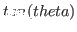

sin theta [function]
-
- theta is a float representing angle by radian.
returns
 .
.
cos theta [function]
-
- theta is a float representing angle by radian.
returns .
tan theta [function]
-
- theta is a float representing angle by radian.
returns .
sinh x [function]
-
- hyperbolic sine, that is,
 .
.
cosh x [function]
-
- hyperbolic cosine, that is,
 .
.
tanh x [function]
-
- hyperbolic tangent, that is,
 .
.
asin number [function]
-
- arc sine of number.
acos number [function]
-
- arc cosine of number.
atan y &optional x [function]
-
-
When atan is called with one argument, its arctangent is calculated.
When called with two arguments,
 is returned.
is returned.
asinh x [function]
-
- hyperbolic arc sine.
acosh x [function]
-
- hyperbolic arc cosine.
atanh x [function]
-
- hyperbolic arc tangent.
sqrt number [function]
-
- returns square root of number.
log number [function]
-
- returns natural logarithm of number.
exp x [function]
-
- returns exponential,
 .
.
expt a x [function]
-
-
returns xth power to a.
2016-03-23